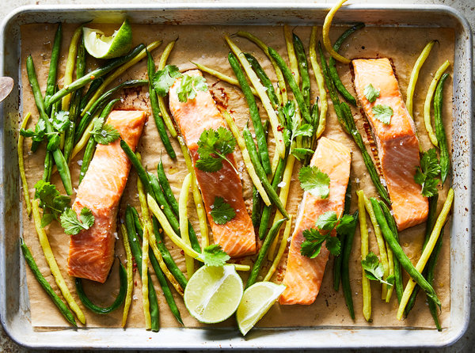

Maple and Miso Sheet-Pan Salmon With Green Beans |
|
YIELD - 4 servings TIME - 20 minutes For a weeknight salmon that’s impressive enough for entertaining, look no further. Salty miso paste and sweet maple syrup are the backbone of this simple, flavor-packed marinade, which is about as involved as this uncomplicated recipe gets. Here, the fish soaks up the sauce as the oven gets hot, and the snappy green beans roast in the same amount of time as the fillets. Start some rice when you walk in the door and you’ll have dinner on the table in under a half hour. |
 |
|
Step 1
Heat oven to 400 degrees and line a sheet pan with parchment paper or foil. Season the salmon fillets well with salt and pepper, and place them on a plate or in a large shallow bowl. Step 2
In a small bowl, whisk together the maple syrup, miso, rice wine vinegar, soy sauce and garlic. Pour the mixture on top of the salmon and gently massage the marinade all over the fish. Let marinate while the oven comes to temperature. Step 3
Meanwhile, in a medium bowl, toss together the green beans with the olive oil, red-pepper flakes and sesame oil (if using) and season generously with salt and pepper. Lay the salmon fillets on the sheet pan skin side down and spread the green beans out surrounding the fillets. Step 4
Arrange the salmon skin side down on the sheet pan and bake until the salmon is opaque and the green beans are cooked through, about 12 minutes. Right before serving, scatter with cilantro and a good squeeze of lime. Season with flaky sea salt and serve with rice, if desired. |
|